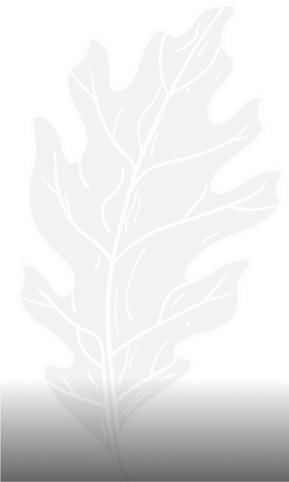
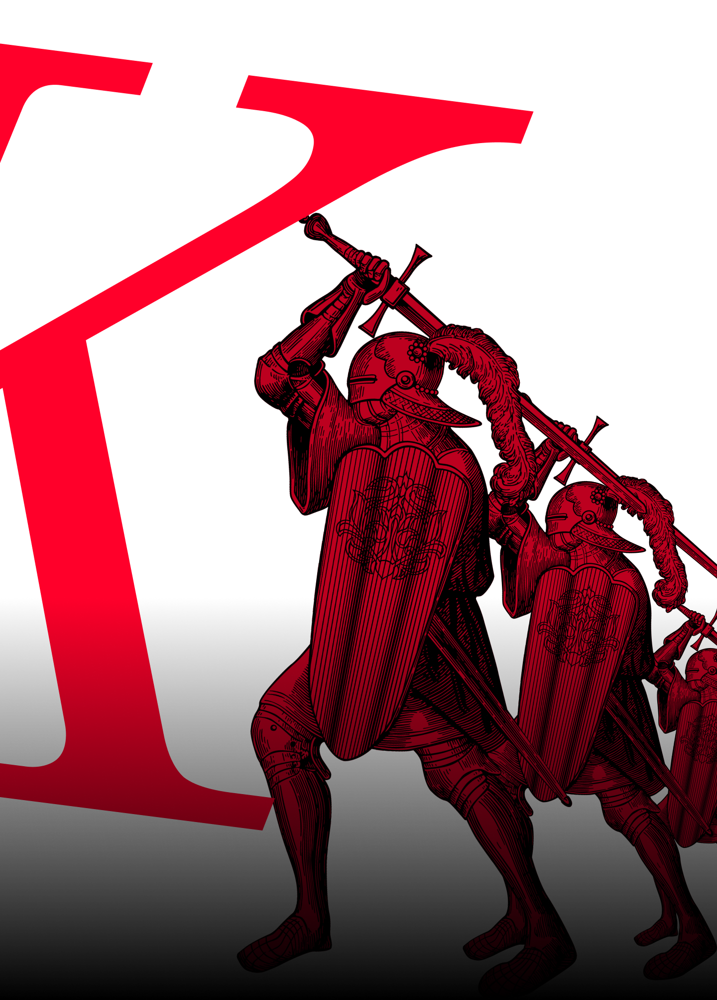

Old Standart TT
3 начертания
Italic
Bold
Regular
Cifri
123456789
Цифры
Old Standart TT
Шрифт отлично подходит к проектам в средневековой стилистике. Сжатая антиква рифмуется с доспехами рыцарей и башнями старых замков
kirilica
ЪУЬ
латиница
ABC
Антиква
строгая
и геометричная
декоративные
капли
засечки
контраст ширины основных
и соединительных штрихов,
как и положено антикве
меняющаяся
ширина букв
засечки
добавляют
строгости
прямые углы
в букве t
рукописная
буква i
Italic
Italic
более плавная
буква «а»
sozdatel
Alexey
Kryukov
Глифы
Å
ä
å
Ћ
ђ
т
Ω
§
«
%
Đ
Ţ
ƌ
Ƒ
Ɣ
ƕ
ƙ
ƚ
ǁ
ǂ
ɀ
ɂ
Ɉ
Ꝅ
Ꝟ
ꝣ
Ꝭ
ꝳ
ꞎ
Ḋ
Ḯ
ễ
å
Ờ
Ữ
Ỷ
ỹ
ỻ
Ỽ
ỿ
Особая геометрия
Буквы сжаты и имеют искаженную форму.
сложность соединения элементов и украшения
делают шрифт особенным